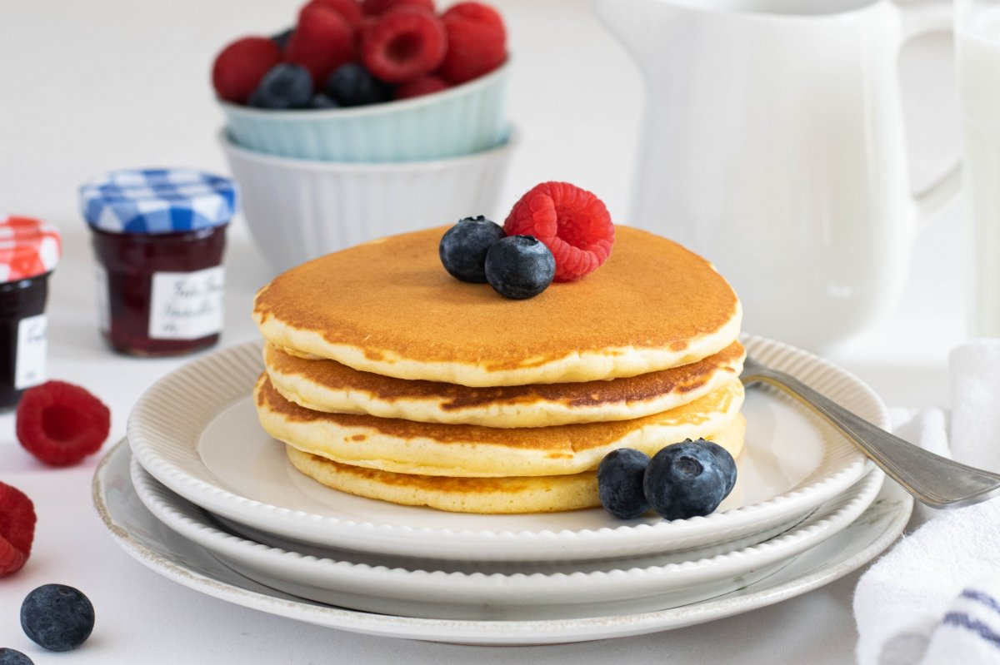

RECETA DE HOTCAKES

INGREDIENTES
- 3/4de leche evaporada
- 1 huevos
- 1 tasa de harina
- 2 cucharadas de mantequilla fundida
- 1/2 Taza de fresas desinfectadas y cortadas en cuartos
- 6 Hojas de menta desinfectada
- Leche Condensada LA LECHERA® Sirve Fácil
receta obtenida de :
nestle>